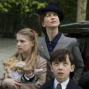

THE BOY IN THE STRIPED PAJAMAS
The Boy in the Striped Pajamas is a 2008 drama film directed by Mark Herman and based on the bestselling novel by John Boyne. The movie tells the haunting story of an unlikely friendship between two boys — Bruno, the son of a Nazi commandant, and Shmuel, a Jewish boy imprisoned in a concentration camp during World War II.
The Boy in the Striped Pajamas is a deeply emotional and moving film that explores innocence, humanity, and the devastating consequences of war through the eyes of a child.
Set in the early 1940s, the film follows eight-year-old Bruno who moves with his family from Berlin to a house near what he believes is a "farm." In reality, it's a concentration camp. Despite strict warnings from his parents, Bruno sneaks out to play with Shmuel, a boy his age on the other side of the fence, unaware of the true horror surrounding them.

The film delicately portrays innocence in the face of unimaginable cruelty. It offers a powerful emotional impact through the eyes of a child who doesn't understand the politics or hatred that separate him from his friend. The performances of Asa Butterfield as Bruno and Jack Scanlon as Shmuel are deeply moving and central to the film’s emotional core.
The supporting cast includes David Thewlis as Bruno's conflicted father, Vera Farmiga as his mother, and Amber Beattie as Gretel, Bruno’s older sister whose worldview is slowly shaped by Nazi ideology. The film explores themes of innocence, ignorance, and the devastating consequences of blind obedience.
The movie received widespread critical acclaim for its sensitive storytelling and powerful performances. While some critics found the plot overly simplified, most praised its emotional depth and the way it highlights the horrors of war through the lens of childhood friendship. It remains one of the most emotionally resonant films about the Holocaust aimed at both young and adult audiences.
Main Cast
Asa Butterfield
Bruno
Jack Scanlon
Shmuel
David Thewlis
Ralf
Vera Farmiga
Elsa
Amber Beattie
Gretel
Rupert Friend
Lieutenant Kotler